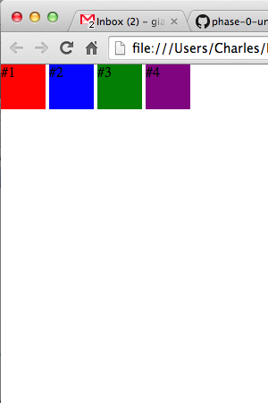
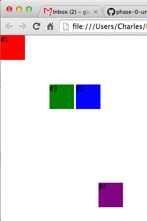
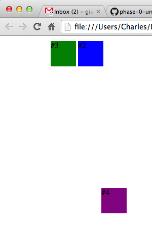
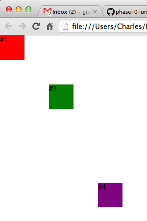

Where the F*** am I?
CSS: Positioning Overview
In CSS there are four major "Position" options: static, relative, absolute, fixed. It is incredibly important to know what each does or you might find that some of your divs have gone missing. The key to understanding how positioning work is not only to understand what each attribute does, but how they interact with one on another, especially when augmented with display settings (block, inline-block).
STATIC is your default setting. It's going to float into the next available spot it can find.
RELATIVE is a variation the theme. It's going to note where it would have ended up if it were static and then based on the parameters you feed it (top, left, right, bottom), it's going to move that many units based off of where it WOULD HAVE been. This is in contrast to absolute...
ABSOLUTE is going to look at the whole page when you give it a top, right, etc attribute and move to the correct pixel on the whole page using the top left corner as starting point. It doesn't reconnoiter at all where it would have been if it were static.
FIXED positioning, like abolute, is going to position itself exactly where you tell it to in your browser frame. When you scroll, however, the absolute item will move along the page, the fixed item will not. It will stay exactly where it's supposed to in the frame. If you told it to be at top: 0px; left: 0px, it will affix itself to the top left of the screen and never move.
Now I will walk you through a series of images that will illustrate each. We start our with four divs that are all exactly the same except for their background color. By default they are all static, and I've set them all to display: inline-block. Thus they all flow into the same line one after another. 
In the next image I leave #1 as a static. #2 and #3 I gave the exact same coordinates: top: 100px; left: 100px, but #2 is relative and #3 is absolute. What do you think will happen?
They've switched order! That's because #2 knows it used to sit right next to #1, but then I tell it to move 100px down and 100px right (away from the left). So from where it used to be in our previous image it travel 100px down and 100px right. #3 on the other hand is told to move 100px down and 100px right, but doesn't start from its previous position as seen in the first image, but from point top: 0px; left: 0px. It doesn't remember where it was in the last photo.
Now #4 I switched to fixed, and gave a set of random coordinates on the page. In the image above it acts just as if it were position: absolute. From 0,0 it moves down and right to the spot I assigned at top: 300px; left: 200px. Then what's the big deal? Watch this! 
When I start scrolling #4 maintains it's spot on the screen. So it's important to realize that while absolute measures from the 0,0 spot on your WEBPAGE, fixed measures from the 0,0 spot in your BROWSER WINDOW. So even if you're on the bottom of your webpage, your fixed object is going to be exactly where you told it to be in the screen.
This post is just a basic overview of the different position settings to show you that it makes sense. I'm just going to show you one of the many caveats to the simple system I displayed above.
Now what if I switched #1 to absolute position? I make its position top: 0px; left: 0px. So it's the same spot. Nothing should change, right? 
Wrong! By switching #1 from static, I pull it out of the natural flow we had in our first image. That means that #2 would no longer be next to #1 in the first image but in the exact same position as it. Thus in our shifted example, even though #2 is still relative it's underneath #3, because it's no longer shifting from a position next to #1, but from the same position as #3, namely 0,0.
The moral is that you have to be careful about switching position settings, because, in doing so you can ruin the flow of your divs. Now go experiment with what happens when you have multiple divs with different positions and display settings. Which ones stack the way you'd expect? Which do not?